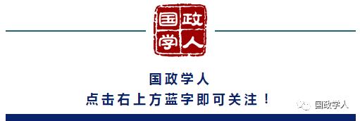

收录于合集

作者简介
王义栀，中国人民大学国际关系学院教授、察哈尔学会高级研究员。
瑞士日内瓦高等国际问题研究生院教授相蓝欣老师6月28日在《联合早报》刊文《欧洲对“一带一路”倡议态度为何发生变化》指出，今年以来，欧洲对“一带一路”倡议的态度发生了巨大变化，除了双方在经济利益上确实有某些冲突之外，中国的宣传方式是主要原因。
其实，欧洲人对“一带一路”的心态变化，当然不是所谓的中国不当宣讲带来的，而是利益与标准之争。“一带一路”国际合作高峰论坛闭幕联合声明，贸易部分遭欧洲抵制而推迟发表并不得不改动，就已经预示着中欧两种全球化之争：中国主张的发展导向全球化与欧洲主张的基于规则的全球化。
“一带一路”在新时期推行开放、包容、均衡、普惠、可持续的全球化，倡导将分裂的世界、分割的市场互联互通起来，形成平等、横向的合作架构，解决跨国公司全球分工所推行的发展中国家向发达国家单向度开放，或主要是发达国家间联系的全球化所产生的不公正、不均衡发展问题；倡导战略对接，将发达国家、发展中国家、新兴国家最广泛连接在一起，真正实现东西、南北、中外、古今的大融通。
这种理想遭遇现实困境严峻挑战：“一带一路”之六大经济走廊沿线65国中，有八个最不发达国家，16个非世界贸易组织（WTO）成员国，24个人类发展指数低于世界平均水平的国家，如何能一刀切实行欧洲所倡导的高标准市场原则？
“一带一路”的成功在于实事求是，倡议最初源于开发性金融实践，弥补市场经济发育不良与基础设施短板的双重困境；不同于商业性金融和政策性金融，开发性金融不只是金融活动，还是一个制度建设的活动。“一带一路”沿线很多国家的市场经济制度不健全，中国就希望通过金融服务的推广，来帮助这些国家进行制度建设；这就是开发性金融。
其次是基础设施先行的工业化。过去，中国有“火车一响黄金万两”的说法，改革开放又有“要致富，先修路；要快富，修高速；要闪富，通网路”的脱贫致富经验，让世人尤其是发展中国家人民很容易为“一带一路”四个字所打动。38年改革开放，中国将7亿人脱贫，占联合国千年发展目标脱贫贡献的七成，这是激励许多发展中国家愿意跟着中国走，积极融入“一带一路”的最直接动因。没有基础设施，就很难实现工业化；没有实现工业化，民主化就注定失败。
中国主张，发展是解决所有难题的总钥匙；规则当然重要，但要不断成熟、循序渐进形成。中国改革所探索出的政府—市场双轮驱动经济发展模式，正在补“一带一路”沿线国家的发展短板，带来基础设施建设的第一桶金，通过养鸡取蛋而非杀鸡取卵，增强自主发展能力，同时培育新的市场。像乌兹别克斯坦这样的双重内陆穷国，按市场经济是很难获国际金融机构贷款的，但获得了国家开发银行贷款，彰显“政府＋市场”双轮驱动的中国模式魅力。印度尼西亚的雅加达—万隆高铁项目，中国之所以击败日本胜出，就在于中国绕开了印尼政府担保的前提，背后都是中国国有银行的支持。
中国改革开放探索出一条工业走廊、经济走廊、经济发展带模式，先在沿海地区试点，继而在内陆港口城市和内陆地区试点推广，形成经济增长极、城市群，带动整个中国的改革开放。现在，“一带一路”要让非洲市场以点带线，以线带片，从基础设施（港区铁路贸五位一体）互联互通着手，帮助非洲获得内生式发展动力，形成经济发展带，实现工业化和农业现代化，共同脱贫致富。
看来，“一带一路”遭遇的最大风险并非来自沿线落后国家，而是发达国家。发达国家对“一带一路”的普遍质疑有债务问题、标准问题、地缘政治、透明度问题、公开采购等。这些质疑，集中反映了发达国家对中国模式及中国模式走出去的方式、成效的质疑，只有当它们最终认识到中国模式具有普适性时，这些质疑才会逐渐消失，而这又是对发达国家所标榜的普世价值的致命冲击。这些质疑通过发达国家对国际舆论的影响，也深入影响到国内舆论，甚至形成国内外质疑“一唱一和”的局面。
二十国集团（G20）汉堡峰会即将登场，将设立“可持续基础设施”专题，德国方面希望形成各方遵守的原则，于是问题来了：以G20统筹“一带一路”，还是以“一带一路”统筹G20？发展导向的全球化还是规则导向的全球化？这两种博弈已经开始，这才是我们最要关心的欧洲对“一带一路”的态度变迁。
-END-
来源：联合早报
筛选：晞哲
编辑：敖遊
声 明
国政学人微信公众平台系非盈利学术平台。建立初衷是方便广大学人进行学术研究，促进学术的传播和交流，不做任何商业用途。如有任何权利问题，请直接与我们联系。
您可能还会喜欢：
期刊分享 |
国际关系相关专业所有核心期刊免费获取（最新pdf版）